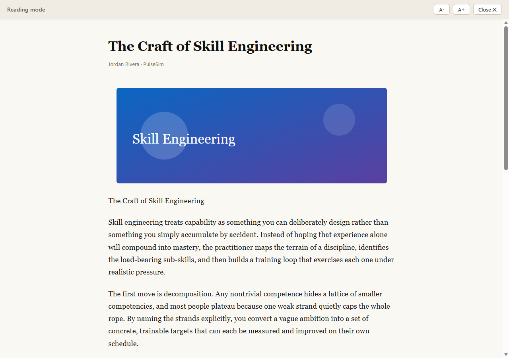

Works where F9 won't
Purpose‑built for pages that block the native reader. If you can see the words, you can read them in peace.
Some sites (LinkedIn articles are the classic case) are built so Edge's built‑in reader (F9) never turns on. Force Reading Mode gives any page a clean, calm, image‑friendly reading view anyway.

It extracts the real article with Mozilla's Readability engine (the same one behind Firefox Reader View) and renders it in an isolated overlay you control.
Purpose‑built for pages that block the native reader. If you can see the words, you can read them in peace.
Figures, diagrams and photos come along for the ride, not just a wall of text.
Toolbar button, Alt+R, or Esc to leave. Adjustable text size, locked scroll.
Everything happens locally in your browser. The
article HTML is sanitized with DOMPurify before it's ever shown, and only
http(s) resources are allowed through.
It's an unpacked extension while in preview — no store needed.
Download v0.1 and unzip it, or clone the repository.
Go to edge://extensions and turn on Developer mode.
Click Load unpacked and choose the extension/ folder.
Open any article and press Alt + R. That's it.